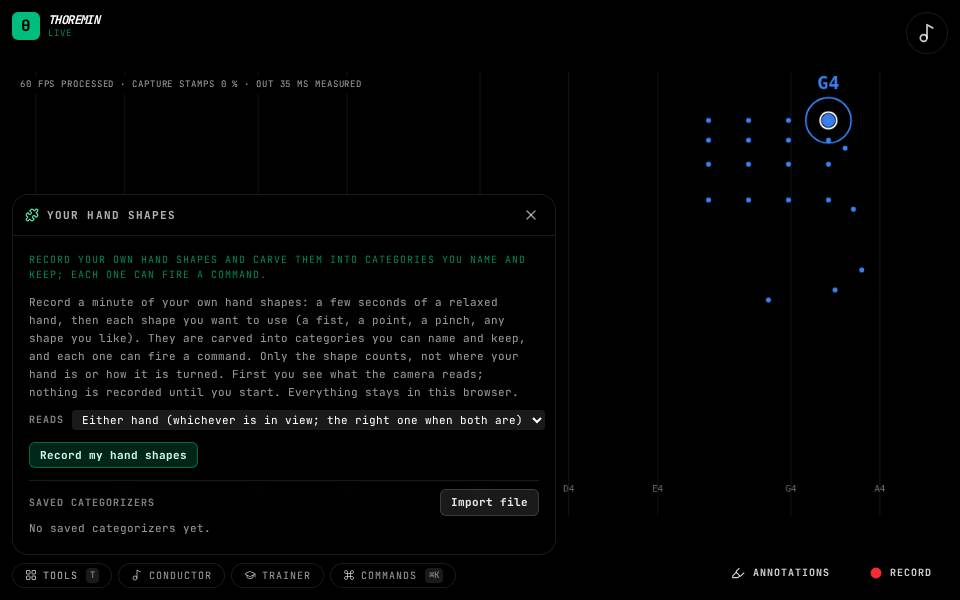

Your hand shapes

What to do
- Open Tools, then Your hand shapes, then Record my hand shapes.
- Make your shapes one after another, as in Your faces.
- Sort and name the groups, then bind them to commands or to the air guitar.
- Under the groups, name a gesture (a wave) and record it a few times: it can fire a command too.
The same tool as Your faces, for the shape of one hand. A shape is read relative to the hand, so left and right hands share it, or you can choose a hand.
Where the shapes go
A saved shape model can be the air guitar's chords (Air Guitar), or fire a command when you make a shape (Gestures).
Gestures: movements, not shapes
Under the groups, the Gestures section keeps movements of your hand: a wave, a circle, a push. Type a name and press Record a gesture. Hold your hand still while a ring fills (it learns how much your hand wanders at rest), then do the movement as many times as it asks, letting your hand come to rest between each one. It stops by itself when it has them; Stop and keep them keeps the ones done so far.
Each gesture shows each of its repetitions as a small drawing of the path, and dots for how alike they are and how far from your other gestures. When one repetition is unlike the others, Drop the odd one removes it; the small x on a drawing drops any one. Record more adds repetitions, Merge into puts two gestures together, and the name can be changed in place. Undo and redo work as for the groups. If a gesture passes through one of your shapes for long enough to also fire it, a line says so when you record it.
A saved gesture appears in Gestures, Your categories, under the groups: bound to a command, it runs that command once each time you make the movement.